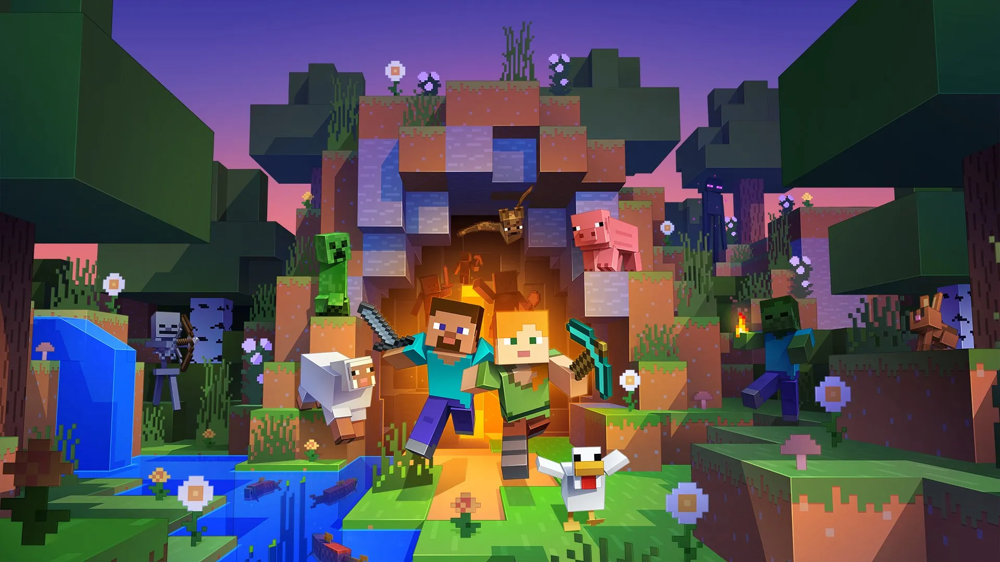
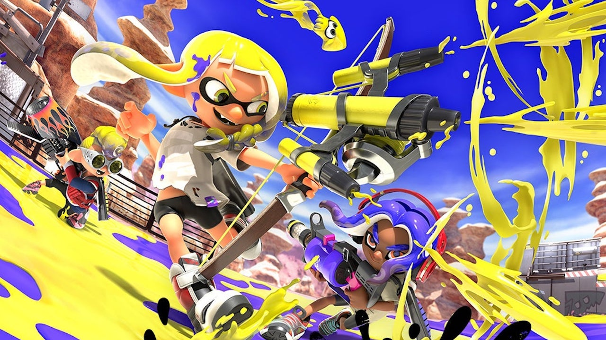

Ne ho tanti per esemipo uscire con gli amici, programmare, aiutare i miei genitori e soprattutto giocare ai
videogiochi.
Per quanto riguarda i videogiochi li conosco da quando avevo circa 7 anni e il mio primo videogioco fu uno della
serie di Super Mario. Ma non è l'unico che mi ha interessato.
Infaftti ce ne sono tanti altri a cui mi sono appassionato: